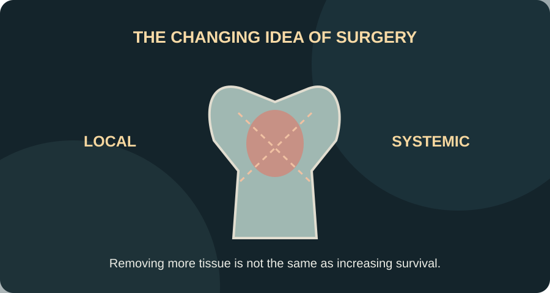

1. Medicine had inherited an enormous problem
For many centuries, Galen's humoral system provided a dominant explanation for disease. Cancer was supposedly caused by a buildup of black bile. Doctors could repeat the theory with confidence, yet they had little direct evidence for the existence of this substance in cancerous tissue.
The logic of treatment also depended on the theory. If a disease resulted from unwanted bodily fluid, physicians might try to drain or redirect it through bleeding and purging. But even these practices created practical questions: which blood vessels should be opened, and which organs did they actually connect to?
Answering such questions required precise knowledge of anatomy. Without a reliable map of the body, physicians could not even be certain that their treatment was being applied to the structures they intended to affect.
2. Andreas Vesalius arrives in Paris (1533)
In 1533, Andreas Vesalius, a nineteen-year-old student from Brussels, arrived at the University of Paris to study anatomy and surgery. He expected to learn the structure of the human body, but what he encountered disappointed him. Dissection lessons were disorganized, specimens were in poor condition, and students had little access to clear demonstrations of muscles, nerves, or blood vessels.
Vesalius decided that learning anatomy from authoritative books alone was not enough. He needed to see the body for himself. He searched for bones and cadavers in places including graveyards and areas where the bodies of executed prisoners were left hanging. The work was grim, but it gave him firsthand access to human anatomical structures.
3. An atlas built from direct observation
Vesalius began making detailed drawings of the body's structures, collaborating with skilled artists. His anatomical work mapped muscles, arteries, veins, nerves, bones, and internal organs. He peeled away layers to show how one structure lay beneath another. These illustrations made the body easier to understand as an interconnected system rather than a collection of vague regions described through inherited terminology.
The project started partly because surgeons needed to know the course of blood vessels for procedures based on Galen's bleeding recommendations. But as Vesalius drew one structure, he realized he needed to draw the neighboring structures as well. A vein lay beside a nerve, the nerve led toward the spine, and the spine connected to the brain. Anatomy could not be mastered one isolated piece at a time.
A reliable understanding of disease requires knowing what the normal body looks like first. Without that reference, abnormal growth and damage are difficult to recognize.

4. The missing black bile
Here the narrative reaches its central discovery. During his extensive dissections, Vesalius could identify blood, lymph-like fluids, and the bile associated with the liver. But he could not find the mysterious black bile that Galen had made so central to cancer and melancholia.
This created an intellectual crisis. Vesalius had been educated in the Galenic tradition and respected its great authority. Yet his observations contradicted one of its foundational claims. The more thoroughly he examined the body, the less room remained for a fluid that nobody could locate.
Vesalius did not simply throw away all previous learning. He maintained respect for Galen while producing illustrations based on what he actually saw. But the drawings themselves undermined the older theory. He began his work hoping to clarify Galen and ended by making one of Galen's central ideas increasingly indefensible.
5. Matthew Baillie studies diseased anatomy (1793)
More than two centuries later, Matthew Baillie developed a complementary approach. If Vesalius had mapped the structure of the normal body, Baillie examined the abnormal body. His 1793 book The Morbid Anatomy of Some of the Most Important Parts of the Human Body described diseased organs, including tumors in the lungs, stomach, and testes.
If Galen's account of cancer were correct, tumors should have been full of trapped black bile. But Baillie's careful study found no such channels or accumulations. He described actual masses and ulcers, not imaginary fluid systems.
By combining careful normal anatomy with careful pathological anatomy, medicine was beginning to replace abstract speculation with material evidence.
6. Why the disappearance of black bile matters
Once there was no convincing evidence for black bile, the argument against surgery began to change. A tumor could be understood as abnormal tissue rather than an eruption of a mythical body-wide substance. If the disease were confined to tissue that could be removed, perhaps an operation could help.
This did not prove that every cancer was local, and it did not make surgery safe. Many tumors had already invaded nearby structures or spread. Still, one major conceptual barrier had weakened: physicians no longer needed to believe that every cancer was necessarily produced by an invisible excess of bile.
The new anatomical approach also helped doctors develop more realistic surgical methods. Instead of guessing which channels carried mysterious fluids, they could identify actual arteries, nerves, and organs.
7. The deeper meaning of Chapter 6
The story of Vesalius is about evidence challenging authority. He respected a medical master but refused to make his own observations conform to an inherited doctrine. The story of Baillie is about the importance of studying both normal and abnormal structures. A physician has to know how the body works before recognizing what a disease changes.
There is also a broader scientific lesson: a theory can survive for centuries because it is beautiful, familiar, and explanatory. But if its central substance cannot be found, researchers must be willing to abandon it.
Chapter takeaway: Black bile did not vanish from the body; it vanished from the medical explanation of the body. Direct anatomical observation helped clear the path for a new era of thinking about cancer and surgery.